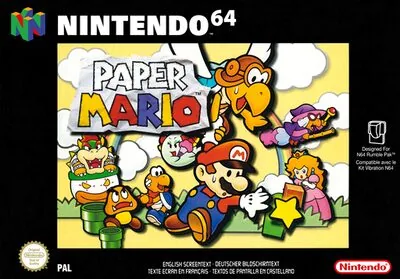

Nintendo 64
Paper Mario
- Año: 2001
- Desarrollador: Intelligent Systems
- Género: Rol
- Jugadores: 1 jugador
Paper Mario es un juego de rol de Intelligent Systems para Nintendo 64, publicado por Nintendo en 2000 en Japón y en 2001 en el resto del mundo. Es el primero de la serie Paper Mario: los personajes son figuras planas, como de papel, en escenarios en 3D.
Bowser ha robado la Vara Estelar, ha encerrado a los siete Espíritus Estelares y se ha llevado el castillo de Peach por los aires. Mario tiene que rescatar a los Espíritus con la ayuda de varios compañeros. Los combates son por turnos, pero se puede hacer más daño (o recibir menos) pulsando el botón en el momento justo: son los «comandos de acción».
Controles
¿Va fluido (imagen y sonido)? A saltar · B martillo. ¿Qué hacen Z, R y los C? Elegir español al empezar.
Mando de N64 adaptado al panel. El joystick mueve la palanca analógica.
| Panel | Juego |
|---|---|
 |  B · Golpear con el martillo · cancelar B · Golpear con el martillo · cancelar |
 |  A · Saltar · aceptar · hablar A · Saltar · aceptar · hablar |
 | R |
 |  C ← C ← |
 |  C ↓ C ↓ |
 |  C → C → |
 |  C ↑ C ↑ |
 | Z |
 |  Start Start |
 + + | Salir del juego |
El panel en Nintendo 64


Argumento
Recopilado de internet (2026-11-03). Lo marcado con ⚠️ no está probado en la bartop.
Bowser roba el Cetro Estelar del Refugio Estelar, encierra a los siete Espíritus Estelares y levanta el castillo de Peach hasta el cielo. Con el cetro se vuelve invencible y vence a Mario.
Mario tiene que rescatar a los siete Espíritus Estelares, repartidos por el reino. Le ayudan compañeros como Goombario, Kooper o Bombette.
Final: con los siete espíritus, Mario sube al castillo de Peach, vence a Bowser y recupera el Cetro Estelar.
Fuentes
Jugabilidad
Recopilado de internet (2026-11-03). Lo marcado con ⚠️ no está probado en la bartop.
- Tipo de juego: rol de Intelligent Systems (2000), con personajes de papel en un mundo en 3D. Estructura en «Guía de niveles».
- Combates por turnos: pulsar en el momento justo hace más daño o defiende mejor.
- Compañeros: cada uno tiene una habilidad fuera de los combates y sus ataques dentro.
- Medallas: se equipan para tener ataques y ventajas nuevas.
- Idioma: la versión de la bartop es la europea y se puede poner en español.
- ⚠️ Los botones Z, R y C no los he encontrado claros en las guías.
Fuentes
Guía de niveles
Recopilado de internet (2026-11-03). Lo marcado con ⚠️ no está probado en la bartop.
Son un prólogo y 8 capítulos:
| Capítulo | Nombre |
|---|---|
| Prólogo | Una petición de las estrellas |
| 1 | Asalto a la fortaleza de los hermanos Koopa |
| 2 | El misterio de las ruinas Seco Seco |
| 3 | El «invencible» Tubba Blubba |
| 4 | Pruebas en la caja de juguetes |
| 5 | Calor en la isla Lavalava |
| 6 | Días oscuros en los Campos de Flores |
| 7 | Un espíritu estelar en el hielo |
| 8 | El combate estelar final |
Fuentes
Objetos
Recopilado de internet (2026-11-03). Lo marcado con ⚠️ no está probado en la bartop.
| Objeto | Qué hace |
|---|---|
| Champiñones | Recuperan vida |
| Flores de fuego, etc. | Objetos de combate |
| Medallas | Dan habilidades nuevas |
Fuentes
Trucos y secretos
Recopilado de internet (2026-11-03). Lo marcado con ⚠️ no está probado en la bartop.
Secretos
⚠️ No he encontrado secretos o trucos que merezca la pena apuntar.
Fuentes
Longplay

Partida completa de la recreativa (463 min), de ProsafiaGaming: Paper Mario 64 HD - Full Game Walkthrough.
Pulsa el minuto de un nivel para ver el vídeo desde ese punto.
Capítulos
| Capítulo | Momento |
|---|---|
| Prólogo | Una petición de las estrellas ▶ 7:25 |
| Capítulo 1 | Fortaleza Koopa ▶ 31:03 |
| Capítulo 2 | Ruinas Seco Seco ▶ 1:08:49 |
| Capítulo 3 | Tubba Blubba ▶ 1:54:26 |
| Capítulo 4 | Caja de juguetes ▶ 2:32:15 |
| Capítulo 5 | Isla Lavalava ▶ 3:20:02 |
| Capítulo 6 | Campos de Flores ▶ 4:16:54 |
| Capítulo 7 | Espíritu en el hielo ▶ 5:18:05 |
| Capítulo 8 | Combate final ▶ 6:34:47 |
| Final | Bowser, final y créditos ▶ 7:10:17 |